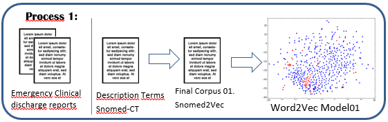

"Introducción al Procesamiento Lenguaje Natural, un enfoque clínico."
Introducción al PLN Clínico. Evolución de la I.A.
Ignacio Martinez Soriano
15-Oct-2021 (Lorca) Webminar
Unidad Técnica Snomed-CT
Hospital Universitario "Rafael Mendez"
PLN-Clinical
- Introduction IA y PLN
- Ciclo de Vida Sistema M.L.
- Sistemas Tradiciones PLN
- Word Embedding
- Snomed2Vec Approach
- Transformers
- Casos de Uso y Librerias
- Conclusiones y Propuestas
1. Introduction:
Introduction:
¿De dónde partimos?
En Agosto de 1955 el profesor de Matemáticas, John McCarthy, organiza una Conferencia en la Universidad de Dartmouth, donde se define el concepto de Inteligencia Artificial, denotándola como un proceso por el que "una máquina se puede comportar de formas que serían llamadas inteligentes si un ser humano hiciera eso"
¿Cómo se genera el Conocimiento?
Todo origen proviene de un "Dato". (DataCentric)

Fuente: matrixcpmsolutions.comImagen
Sistema Tradicional VS Sistema M.L (IA)
¿Cómo aprende un algoritmo?

Machine Learning:
Disciplinas dentro de la I.A.
¿Donde se encuentra el PLN?:
¿Qué tćnicas utiliza?
Como aplicar ML al tipo de problemas
Cada problema tiene un algoritmo (1/3)

Como aplicar ML al tipo de problemas
Cada problema tiene un algoritmo (2/3)
Como aplicar ML al tipo de problemas
Cada problema tiene un algoritmo (3/3)
Ciclo de Vida del M.L.(1/2)
La clave está en el autoaprendizaje. o Ajuste de pesos.

Fuente: AWS AmazonImagen
Ciclo de Vida del M.L.(2/2)
La clave está en el autoaprendizaje. o Ajuste de pesos.
Fuente: AWS AmazonImagen
2. Procesamiento Lenguaje Natural
Definición PLN:
Es un campo dentro de la inteligencia artificial y la lingüística aplicada que estudia las interacciones mediante uso del lenguaje natural entre los seres humanos y las máquinas. Más concretamente se centra en el procesamiento de las comunicaciones humanas, dividiéndolas en partes, e identificando los elementos más relevantes del mensaje. Con la Comprensión y Generación de Lenguaje Natural, busca que las máquinas consigan entender, interpretar y manipular el lenguaje humano.
Fuente(decisiones.es): decisiones.es
Modelos para el PLN (1/2)
Tratar computacionalmente una lengua implica un proceso de modelización matemática.
Existen dos aproximaciones generales al problema de la modelización lingüística:
- Modelos Lógicos: gramáticas
- Los lingüistas escriben reglas de reconocimiento de patrones estructurales, empleando un formalismo gramatical concreto.
- Reflejan la estructura lógica del lenguaje y surgen a partir de las teorías de N. Chomsky en los años 50.
Fuente: IIC
Modelos para el PLN (2/2)
- Modelos probabilísticos del lenguaje natural: basados en datos
- La idea es que basado en colecciones de ejemplos y datos (corpus) y a partir de ellos se calculan las frecuencias de diferentes unidades lingüísticas (letras, palabras, oraciones) y su probabilidad de aparecer en un contexto determinado.
- Calculando esta probabilidad, se puede predecir cuál será la siguiente unidad en un contexto dado, sin necesidad de recurrir a reglas gramaticales explícitas.
- Es el paradigma de “aprendizaje automático” que se ha impuesto en las últimas décadas en Inteligencia Artificial: los algoritmos infieren las posibles respuestas a partir de los datos observados anteriormente en el corpus.
Fuente: IIC
Componentes del Procesado Natural
Los análisis se aplican dependiendo del objetivo de la aplicación:
- Análisis morfológico o léxico. Consiste en el análisis interno de las palabras que forman oraciones para extraer lemas, rasgos flexivos, unidades léxica compuestas. Es esencial para la información básica: categoría sintáctica y significado léxico.
- Análisis sintáctico. Consiste en el análisis de la estructura de las oraciones de acuerdo con el modelo gramatical empleado (lógico o estadístico).
- Análisis semántico. Proporciona la interpretación de las oraciones, una vez eliminadas las ambigüedades morfosintácticas.
- Análisis pragmático. Incorpora el análisis del contexto de uso a la interpretación final. Aquí se incluye el tratamiento del lenguaje figurado (metáfora e ironía) como el conocimiento del mundo específico necesario para entender un texto especializado.
Fuente: IIC
Aplicaciones y usos Lenguaje Natural (1/2):
Fuente: IBerdrola Innovación
Aplicaciones y usos Lenguaje Natural (2/2):
- Resumen de textos, consiste en encontrar la idea principal del texto e ignorar lo que no sea relevante.
- ChatBots, deberán ser capaces de mantener una charla fluida con el usuario y responder a sus preguntas de manera automática.
- Generación automática de keywords y generación de textos.
- Reconocimiento de entidades, encontrar personas, entidades comerciales o gubernamentales, países, ciudades, marcas…etc.
- Análisis de sentimientos, deberá comprender si un tweet, una review o comentario es positivo o negativo y en qué magnitud (neutro). Muy utilizado en redes sociales, en política, opiniones de productos y en motores de recomendación.
- Machine Translation, Ofrece la posibilidad traducir el texto o el audio de un idioma a otro rápidamente y cada vez con más exactitud.
- Clasificación automática de textos, en categorías pre-existentes, detectar temas recurrentes y crear las categorías.
Fuente: Baoss.es
Técnicas clásicas utilizadas en el análisis:
- Tokenizar: separar palabras del texto en entidades llamadas tokens, con las que trabajaremos luego. Deberemos pensar si utilizaremos los signos de puntuación como token, si daremos importancia o no a las mayúsculas y si unificamos palabras similares en un mismo token.
- Tagging Part of Speech (PoS): Clasificar las oraciones en verbo, sustantivo, adjetivo preposición, etc
- Shallow parsing / Chunks: Sirve para entender la gramática en las oraciones.
- Bag of words: (Sparse Vector)es una manera de representar el vocabulario que utilizaremos en nuestro modelo y consiste en crear una matriz en la que cada columna es un token y se contabilizará la cantidad de veces que aparece ese token en cada oración (representadas en cada fila).
- Word Embedding, representación de las palabras en un espacio vectorial, según el contexto..
Fuente: Baoss.es
3. Word embedding:
La Idea inicial ya la dió Cervantes:
 En España tenemos un refran:
En España tenemos un refran:
“Dime con quien andas y te diré quien eres”[El Quijote II, 10 y 23]
To identify the semantic meaning of a word,
it depend of the words around it.Word Embedding are based on the idea that contextual information alone constitutes a viable representation of linguistic terms
In computational linguistic, we use the term distributional semantic model, linguistic items with similar distributions have similar meanings.
Evolution:
- In 2003 Bengio et al. proposed a Neural language Model which learned distributed representations for words
- Collobert and Westorn(2008) was the firts work to show the utility of pre-trained word embeddings
- In 2013 Mikolov et al. proposed Word2Vec, with two approach, continous bag-of-word and skip-gram, to construct high quality distributed vector representations
what is Word2Vec?
- Input is a One hot vector of all words from text
- One hide layer, with size of the word vector
- A output layer, using a SoftMax classifier
Word2vec is two approach– CBOW(Continuous bag of words) and Skip-gram model.
Learn weights which act as word vector representations, with a size window, about the word context
The training method of word2vec is backpropagation with stochastic gradient descent.

Word2Vecs'trick:
There is no activation function on the hidden layer neurons, and the output neurons use softmax clasification method to build a probability distribution.
Really, the goal is just to learn the weights of the hidden layer. It'll be the “word vectors”.
The hidden layer, represent the vector of the word in the space model
4. Snomed2Vec Approach:
1. DataSets Creations:
2. Pre-processing Text:
-
Initial DataSets for training:
- DataSet_Model01: local domain.(Discharge Emergency Reports + Snomed-cT Descriptions)
- 516.211 discharge emergency reports from (2009-2018)
- 636.439 Snomed-CT descriptions Terms
- Final size of DataSetModel01 to train, 1.152.650
- DataSet_Model02, (Spanish Wikipedia Dump + Snomed-cT Descriptions), General domain
- Link to: WikiExtractor framework from Guiseppe Attardi
- Normalized Text:
- Tokenizer the text
- Lowing words, removing some punctuation sign.
- Eliminating Spanish accent
- Remove some StopWord, but not the negative words
3. Apply Word2Vec Gensim (Skipgram) framework
-
Parameters:
- Size=300, size of the vector
- Window=8, Context size
- min_count=1, less frecuency word
- sh=1, SkipGram framework
- hs= SoftMax, classifier
After trainning process, we get 2 model.
4. Final Words Space Vector Models
- Model_01, local domain trainning model, (Emergency Reports + Snomed Descriptions)
- Model_02, General domain trainning model, (Spanish Wikipedia + Snomed Descriptions)
With theses models we get the vector of every word
5. Final Snomed2Vec Model And Similarity Methods:
1. Final Snomed2Vec Model.
To get the final Snomed2Vec model approach, we use the previous Models (01, 02), to create a 2 news space Model, with the descripcions tems of Snomed-CT.
From the Snomed-CT DataSet, with the structure:
(*)Link to: get the Top level hierarchy of a concept, we need to use: Snomed-CT Transitive closure implementation
2. Getting final description Vector
Use the previous Word Space Models, to get the final description terms vector.
- Description Terms => (d) = (w1 + w2 + ... + wn)
- v(d)= ∑(i=1) v[wi] ≡ v[w1]+v[w2]+...+v[wn]
3. Final Space Model - Snomed2Vec
New Vector Space Model, Snomed2Vec

Size of the Space Vector Model: (516211, 4)
[ID_Concept] [corpusTerm] [Hierarchy] [Vector(Description)]
3.1 Design Process - Snomed2Vec
4. Similarity Distance - New Approach
We use the Cosine distance, to identify the similarity between concepts

Our approach is:
- we use Gensim distance of the Similarity method implementation, but not, over the the Space model of the trainner model (01, 02).
- We apply over the Final Snomed2Vec space Model.
4.1 Space Vector Model Snomed2Vec
| Number | Id-Concept | Vector(description Term) |
|---|---|---|
| 0. | 102002 | [0.503108, 0.466876, -0.0276602, -0.234006, -0.116602, 0.484161, 0.125, -0.351791, 0.168337, -0... |
| 1 | 103007 | [[1.08219, -0.860717, 0.460997, 0.467138, -0.109274, 0.35905, 0.0495269, -1.52099, 0.485955, -0.... |
| ... | ... | ... |
| ... | ... | ... |
| 516211 | ... | [[1.09046, 1.19666, 0.137113, 1.16608, -1.54469, 1.88294, 0.745489, -1.53078, 0.679535,... |
Implementation tricks 1/2
Link to: Gensim implementation, to our solution
Creation of the Initial Matrix to get the Snomed2Vec Vector Space Model
# Input data = DataSet-Matrix
def init_vars(data):
vector_size = len(data['vecSnom'][0])
vocab_size = len(data['vecSnom'])
logging.info("precomputing L2-norms of word weight vectors")
index2word = data['concept'].tolist() # map from a word's matrix index (int) to word (string)
syn0 = np.array(data['vecSnom'].tolist(), dtype=REAL)
syn0[np.isnan(syn0)] = 0.0
syn0norm = zeros((vocab_size, vector_size), dtype=REAL)
np.seterr(divide='ignore', invalid='ignore')
syn0norm = (syn0 / sqrt((syn0 ** 2).sum(-1))[..., newaxis]).astype(REAL)
return syn0, index2word, syn0norm
Implementation tricks 2/2
def mas_similar(positive=[], model=w2vModel, topn=15):
vector=vectorSnomed(positive,model,300)
vectorNorm = (vector / sqrt((vector ** 2).sum(-1))[..., newaxis]).astype(REAL)
mean = []
mean.append(vectorNorm)
mean = matutils.unitvec(array(mean).mean(axis=0)).astype(REAL)
limited = syn0norm
dists = dot(limited, mean)
dists[np.isnan(dists)] = 0.0
best = matutils.argsort(dists, topn=topn, reverse=True)
result = [(index2word[sim], float(dists[sim])) for sim in best]
return result[:topn]
5. New Methods Snomed2Vec
We create next methods to use with Snomed2Vec:
- vectorSnomed(queryText, model, size):
- Out: q(Query txt), v(q)= ∑(i=1) v[wi], get a vector from the query
- Mas_Similar(txt, model, topn):
- Out: List of n items more closed in the Space model from vector(txt)
- Similares(term, jer='all', nMax=3):
- Out: List of nMax more similar concepts from Snomed-CT, grouping by hierarchy
Mapping Clinical Concept:
To identify the diagnosis and procedure, from the free text, we need a Clinical Terminology (ICD-10-MC,Snomed-CT..)

This process is heavy and need an expert.
Spanish NER Tool approach:
We propossed a tool to help the clinicians, to search in Snomed-CT and find the correct Medical concept Code.
Snomed2Vec, is an ontology based named entity recognition tool using word embedding, that suggest what is the most similar concept of Snomed-CT, that appear in a text.
Snomed2Vec, from a query text, It suggest what is the most similar concepts from Snomed-CT grouping by its top level hierarchy.
Background and Related Work:
Different approach of Ontology-Based Names Entity recognition.
- Ontology Matching.
- Named Based Techniques.
- Word Embedding Ontology Matching.
Try to solve a problem of semantic heterogeneity
Try to identify the most similar string in a text search
Represent entities in ontologies with word embedding
6. Use Cases:
Use case:
Snomed2Vec Tools Page
Prototype Snomed2Vec Web
7. Evaluation and tips:
Evaluations:
We proposed, two kind of evaluations:
- Using a Corpus Gold Data, prepared for this experiment, with two Documentalist experts
- Link to: A social approach, to evaluate the paper, with a public survey.
The performance of the tool: Precision: P = TP/(TP+FP), Recall: R =TP/(TP+FN), where TP = true positive, TN=true negative, FN =False negative and FP= false positive.
Use this survey:
Contributions:
We publish a Github repository, for this project, to share the Notebooks:
Snomed2Vec Github: Link to: Snomed2Vec (https://github.com/NachusS/Snomed2Vec)
You can reproduce and improve this development, with this code.
8. Conclusion and Outlook:
Conclusions:
- This is a tool, to help the human expert, choose the best SNOMED-CT Code.
- With a closed domain training model, the system can solve abbrevitions
- You can integrate with a N.E.R. system, and help to get the correct code.
- we offer publish notebooks to reproduce the project. And Test it.
THE END
Autores:
- Ignacio Martínez Soriano
- Juan Luis Castro Peña
- Jesualdo Tomas Fenandez Breis
- Ignacio San Roman Lana
- Adrian Alonso
- David Guevara Baraza